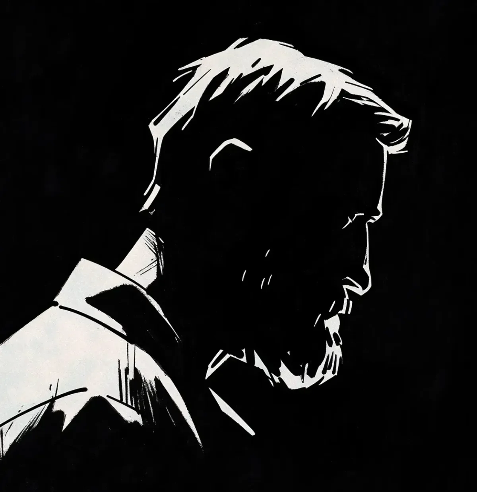

마지막 의뢰를 받은 지 3주가 지나자 얼굴들이 녹기 시작했다. 처음에 빈센트는 피로 때문이라고 생각했다. 작업실에서 보낸 수많은 늦은 밤, 지나치게 많이 마신 커피, 그리고 끝없는 마감일들 때문이라고.
[The faces started melting three weeks after his last commission. At first, Vincent thought it was fatigue - too many late nights in the studio, too much coffee, too many deadlines.]
하지만 휘트모어 부인의 딸이 어머니의 초상화를 보고 눈물을 터뜨렸을 때, 캔버스 위에서 촛농처럼 흘러내리는 뺨을 가리키며, 그는 뭔가 잘못됐다는 것을 알았다.
[But when Mrs. Whitmore’s daughter burst into tears at her mother’s portrait, pointing at the way the cheeks slid down the canvas like wax, he knew something was wrong.]
한때 자신의 최고 작품들을 자랑스럽게 전시했던 작업실 벽은 이제 공포의 갤러리가 되어버렸다. 눈은 이마를 가로질러 이동했고, 입은 불가능한 모양으로 뒤틀렸으며, 피부 질감은 흐트러진 물처럼 일렁였다.
[His studio walls, once proudly displaying his best works, now held a gallery of horrors. Eyes migrated across foreheads, mouths twisted into impossible shapes, and skin textures rippled like disturbed water.]
매일 아침, 그는 초상화들이 전날 밤 두었던 모습과 약간 달라져 있는 것을 발견했다. 처음에는 미세한 변화였다. 살짝 움직인 눈썹, 조금 더 넓어진 미소. 하지만 점점 더 대담해지고 괴기스러워졌다.
[Each morning, he’d find the portraits slightly different from how he’d left them the night before. The changes were subtle at first - a shifted eyebrow, a slightly wider smile - but they grew bolder, more grotesque.]
휘트모어 사건 이후로 의뢰는 완전히 끊겼다. 그래도 빈센트는 그리는 것을 멈출 수 없었다. 그의 스케치북은 정상적으로 시작했다가 불가피하게 악몽으로 변해버리는 얼굴들로 가득 찼다.
[The commission requests dried up after the Whitmore incident. Still, Vincent couldn’t stop drawing. His sketchbooks filled with faces that started normal but inevitably twisted into nightmares.]
그는 매체를 바꿔보았다. 유화에서 목탄으로, 연필에서 디지털로. 하지만 결과는 늘 같았다. 심지어 그가 찍은 사진들조차 왜곡되기 시작했고, 피사체들의 얼굴 특징들은 천천히 묵묵한 비명을 지르는 표정으로 재배열되었다.
[He tried switching mediums - from oils to charcoal, from pencil to digital - but the result was always the same. Even photographs he took began to warp, the subjects’ features slowly rearranging themselves into expressions of silent screams.]
어젯밤, 그는 자화상을 그리기로 결심했다. 거울은 그의 익숙한 얼굴을 비췄다: 회색빛이 도는 수염, 걱정의 주름, 지친 눈. 그의 손은 숙련된 정확성으로 종이 위를 움직였지만, 다른 무언가가 그의 붓놀림을 이끌었다. 종이에 나타나는 얼굴은 그의 것이 아니었다. 아니, 그의 얼굴이긴 했지만, 속이 뒤틀리게 만드는 방식으로 잘못되어 있었다. 그가 그리는 각각의 선은 자체적인 심장박동으로 맥동치는 것 같았고, 각각의 그림자는 물리적으로 가능한 것보다 더 깊었다.
[Last night, he decided to draw himself. The mirror showed his familiar face: the graying beard, the worry lines, the tired eyes. His hand moved across the paper with practiced precision, but something else guided his strokes. The face emerging on the page wasn’t his - or rather, it was, but wrong in ways that made his stomach turn. Each line he drew seemed to pulse with its own heartbeat, each shadow deeper than physics should allow.]
이제 그 초상화는 이젤 위에 놓여있고, 그는 눈을 뗄 수가 없다. 그림 속 얼굴이 움직이기 시작했고, 종이로 된 피부 아래에서 근육이 움직인다. 작업실 창문에 비친 그의 모습도 그것을 따라 변하기 시작했고, 얼굴의 특징들이 물 위의 기름처럼 미끄러졌다. 그가 자신의 뺨을 만지려 손을 뻗자 그의 손가락 아래에서 살이 움직이는 것이 느껴졌고, 마치 새로 빚은 점토처럼 부드럽고 구부러졌다. 그의 손가락 자국은 사라지지 않았다.
[The portrait now sits on his easel, and he can’t look away. The face in the drawing has started to move, muscles shifting beneath paper skin. His own reflection in the studio window has begun to match it, features sliding like oil on water. He reaches up to touch his cheek and feels it shift beneath his fingers, soft and malleable as fresh clay. His fingertips leave impressions that don’t fade.]
작업실의 어두운 구석에서, 그의 최근 자화상이 지켜보고 있었고, 그 미소는 초단위로 더 넓어지고 있었다. 얼굴들은 더 이상 녹고 있지 않았다. 그것들은 진화하고 있었다. 빈센트의 손은 연필을 다시 집어들며 떨렸다, 자신에게서 흑연과 그림자만이 남을 때까지 계속 그리게 될 것임을 알면서.
[In the dark corner of his studio, his latest self-portrait watches, its smile growing wider by the second. The faces aren’t melting anymore - they’re evolving. Vincent’s hands shake as he picks up his pencil again, knowing he’ll draw until there’s nothing left of him but graphite and shadow.]